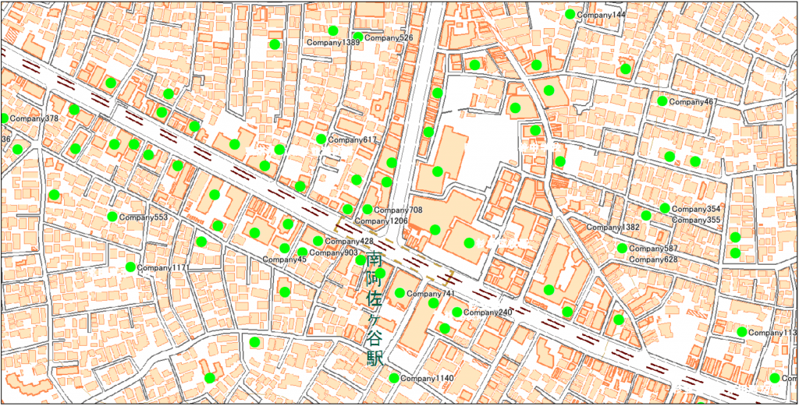
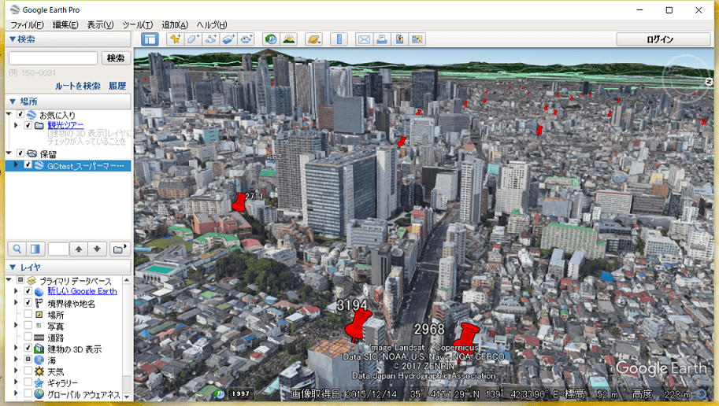

-
ホーム
-
製品 / サービス
-
Location Passport
お手持ちの顧客リストの件数はどのくらいありますか？
10件や20件なら、地理情報システム（GIS）で地図上に一つずつ登録して活用することも難しくないでしょう。
でも、1000件ならどうでしょうか？
ちょっとした顧客データなら、100万件を超えることもざらです。
こんな時は、手持ちリストの住所の文字列から自動的に緯度経度を対応させ、GISで活用可能な位置情報に加工する「ジオコーディング」が便利です。
「Location Passport」を活用すれば、従来は専門的な知識が必要でなんとなく難しいと敬遠していたジオコーディング処理が、手軽にパソコン上で実現できます
特徴
高速処理
マッチングの手法やデータベースの構造に独自のノウハウを導入。秒あたり5500行を超える超高速なジオコーディング処理を実現しています。
高い秘匿性
PC上で単独動作するアプリケーションのため、ネットワーク接続は不要です。したがって、秘匿性の高い顧客等の住所がインターネットを通じて流れるリスクはありません。
融通性高い利用環境
オンラインでのジオコーディングサービスで一般的な、一日あたりのジオコーディングの数量制限はありません。また、Location Passportでジオコードした結果は組織内であれば、他のGISソフト等で自由に利用することができます。
番地号レベルまで可能な高精度な処理（オプション）
標準住所辞書では最大で街区レベルまでのジオコーディングが可能です。オプションの高精度住所辞書を導入することで、全国的に番地号レベルのピンポイントのジオコーディングが実現します。
処理するcsvデータを開き、処理する住所列を選択して変換を実行するだけでジオコーディングが簡単に実現します。 各レコードに、緯度経度および精度を示すマッチレベルが付与されます。結果はcsv出力して、各ソフトウェアで活用可能です。
標準住所辞書と高精度住所辞書
Location Passport のジオコーディング処理をつかさどる住所辞書は標準版・高精度版の2種類を用意しています。
標準版では、国土交通省が公開する「街区レベル位置参照情報」を住所辞書として利用しています。都市計画区域相当のエリアについて街区レベルの精度でジオコーディングが可能です。
高精度版は、全国的に番地号レベルでカバーしたインクリメントP製の住所データを使用しています。
高精度住所辞書でジオコーディングした例
おおむね建物に対応したピンポイントのジオコーディングが可能です。
標準辞書でジオコーディングした例
街区の代表点にジオコーディングされますので、同一街区のポイントは重なって表示されます。

KML形式でエクスポートして利用可能
ジオコーディング結果はKML形式で保存可能です。
専用のGISアプリがなくても、Google Earthで結果を確認することができます。

動作環境
- 本ツールはWindowsの.NETアプリケーションです。実行には.NET Framework4.5以上がインストールされている必要があります。
- 本ツールのアプリと住所DB含むフォルダを任意の場所に置くことで使用開始できます。標準のフォルダ容量は287MBです。
- ジオコード処理ではあらかじめ住所DBをメモリにロードするため、使用する住所辞書により必要とするメモリ容量が変わります。本ツール付属の標準住所DBの場合は約300MB以上、オプションの高精度辞書の場合は約650MB以上を必要とします。
- 本アプリケーションはLGPLプログラムライブラリ geocorder.dll を使用します。
価格
|
内容 |
価格（税別） |
| ソフトウェア本体 |
標準住所辞書を含む |
40万円
+
年間保守（8万円/年） |
| 高精度住所辞書 |
1年間有効 |
115万円 |
3年間有効
毎年更新 |
325万円 |
| 買切り・更新なし |
200万円 |
※都道府県単位でお求めの場合はお問い合わせください。
「Location Passport」に関するご質問は、お問い合わせフォームからお送り下さい。
オンラインでアクセス可能なデモサイトのご紹介など可能です。